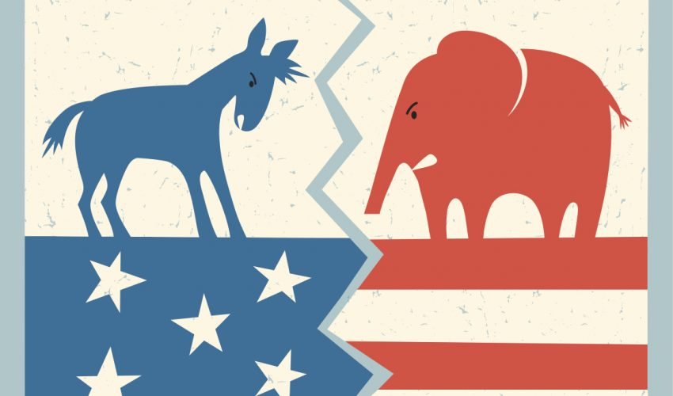

Political Affiliation Classification
Aug-Dec 2022

This project is for my social data analytics’ undergraduate capstone. Most of my projects in the fall 2022 semester are in the fields of natural language processing/text analysis and this is one of them. This project combines both machine learning and statistical inference. The objective of this project is to (1) find a good classification model that can classify tweets into three categories (left, natural, right), (2) apply the same classification model to tweets from 2022 and tweets collected from 2010; then, assess whether the performance of the model in 2022 is any better than the model performance in 2010. The motivation behind this project is that we have experienced an increase in the level of polarization in the real world and the online world. Although the level of polarization is hard to quantify, I believe most people can agree with the statement that the US is more polarized today compared to 2010. Therefore, such a phenomenon motivated me to question whether will the model performance increase with time. My theory is that since the environment is more polarized, people are more likely to use “easy-to-identify” words with regard to their political affiliation; therefore, the performance of the same classification model should be better in 2022 compared to 2010.
The application of this project is not easy because it involves historical tweets. Since my Twitter developer account does not have access to historical tweets from 2010 through their official API. As a result, I have to do web-scrapping and it was good practice for me. The resulting dataset has around 10000 tweets for each year and I randomly subset both to 1000 tweets. The machine learning phase of this project is relatively easy because text analysis and political affiliation classification are well-research areas. I have to manually label each tweet because I am doing supervised learning. After that, I tried multiple classification models (SVM, random forest, naive Bayes, etc) on the document frequency matrix of the tweets. The chosen model is SVM (88% accuracy on 2010 data calculated by the mean of k=30 cross-validation, 92% on 2022).
In order to compare model performance on 2022 data and 2010 data. I used k=30 cross-validation to build a sample distribution of accuracy for each year and then use permutation testing to test whether this two-sample distribution is from one population distribution (two samples one population test through permutation testing). As a result, the estimated p-value from permutation testing is not less than 0.05 and I cannot conclude that polarization made tweets significantly easier to be classified in terms of political affiliation.
NLP & Topic Modeling on User Review Dataset
Sep 2022
This is one of my practice projects because I am learning text analysis this year. Topic modeling is one of the classical categories in the field of text analysis. In this project, I clustered customer reviews into groups and discovered the latent semantic structures using Python. The preprocessed review text by tokenization, stemming, stop words removal, and extracted features by Term-Frequency-Inverse Document Frequency (TFIDF). The trained unsupervised learning models are K-means clustering and Latent Dirichlet Analysis. I identified latent topics and keywords of each review for clustering and then visualized model training results by dimensionality reduction using principal component analysis.
Customer Churn Prediction in Telecommunications Industry
Aug 2022
This is a practice project I did in the summer. Customer Churn prediction is a very classic and popular practice project. In this project, the objective is to develop algorithms for telecommunications service vendors to predict customer churn probability based on labeled data via python. Preprocessing procedures are standard as data cleaning, categorical feature transformation, standardization, etc. The trained supervised machine learning models including Logistic Regression, random forest, and K-Nearest Neighbors, and applied regularization with the optimal parameter to overcome overfitting. The chosen model is a random forest. Its performance is F1 score = 0.9 via k-fold cross-validation technique and analyzed feature importance to identify top factors that influenced the results.
Stock Portfolio Auto Allocation
Jan-May 2022
This is a course project. The objective is to find a paper and reproduce its results and then add our own novelty to the paper’s method. The paper I choose used an ensembled reinforcement agent (A2C, PPO, DDPG) to auto-perform portfolio allocation and stock trading. I successfully reproduce its results and it was my first experience with reinforcement learning. The training environment of the agents is a modified OpenAI gym. I have noticed that the agent performs very poorly in early 2022 and my added novelty is trying to ensemble fewer agents and extend the training data all the way back to the 1970s. As the result, the performance of the ensembled agent demonstrates its ability to minimize loss during large drawdowns and return a higher-than-market average profit to investors during less volatile periods.
Links:
GitHub: https://github.com/jjz5463/DS340W_AutoStockTrading
Stock Prices and Market Index Prediction
Mar 2022
This is a side project I did during the auto portfolio allocation project. Since LSTM is a very popular model for analyzing the volatility feature of stock prices and market indices, I tried it while I was working on the portfolio allocation project. LSTM is a deep learning time series model, and I trained it by changing activation and regularization functions via TensorFlow on GPU. Ideally, I can deploy the built LSTM model as a service to predict the variation of the S&P 500 index. However, the error of the LSTM I trained was relatively high (Root Mean Square Error=80).

This is a course project in form of a Kaggle competition. The project aims to identify fraudulent transactions from credit card data through binary classification. This is a very classic topic in machine learning. The major challenge in this project is that the dataset is highly imbalanced with only 0.2% of the training data labeled as fraud. I performed an oversampling technique, SMOTE, to balance the data. Multiple models were trained on the dataset (Logistic, XGBoost, SVM, etc.). The model chosen is a random forest model, which yields a 90% AUC score.
Subreddit Classification
Oct 2021

This is a course project for a statistical learning class, which is also a Kaggle competition. The objective of the project is to classify Reddit comments and posts into 10 subreddits. After the data was turned into a document frequency matrix, I performed dimension reduction through PCA and then trained the model using XGBoost. The challenging part of this project is that the model was trained on a small dataset with examples of comments posted in 10 different subreddits and then tested on a much larger data set of comments. The result yielded an 85% accuracy.